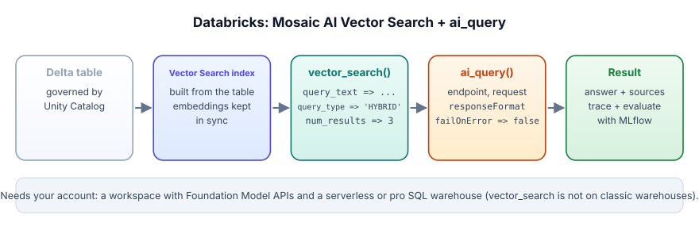

Databricks Mosaic AI: ai_query and Vector Search
On Databricks the same RAG path runs on Delta tables governed by Unity Catalog: a Vector Search index built from a table, the vector_search() SQL function to retrieve, and ai_query() to call a model endpoint from SQL or a pipeline.
You need a workspace with model serving (Foundation Model APIs or an external-model endpoint) and, for vector_search(), a SQL warehouse that is not a classic warehouse (the docs say the function is not available on classic SQL warehouses). Whether a free edition or trial includes these is something to check on your account (⚠ unverified). Local stand-in: labs/10_ai_sql_udf.py. We did not run the SQL below against a live workspace.
ai_query(endpoint, request) calls a model serving endpoint once per row. The endpoint can be a Databricks-hosted foundation model (names like system.ai.meta-llama-3-3-70b-instruct in the docs), an external model you registered, or your own fine-tuned model. Optional arguments add a return type, failOnError, modelParameters and responseFormat for structured output. vector_search(index, query_text | query_vector, num_results) queries a Mosaic AI Vector Search index and can run hybrid (vector plus keyword) search.
Databricks is like a school where the library, the teachers and the rule book are all run by the same office. The library (Delta tables and the Vector Search index), the helper who writes answers (a model endpoint called by ai_query) and the rules about who may read what (Unity Catalog) live together. The analogy breaks because in a school the office notices a rule being broken; here the rules only apply if you actually put the tables, index and endpoints under them.

Retrieve. The docs' hybrid example searches a support-docs index for an error code, which is exactly the case where keyword matching helps (Lesson 3.6):
SELECT * FROM vector_search(
index => 'main.support_docs.index',
query_text => 'Wi-Fi issues LMP-9R2',
query_type => 'HYBRID',
num_results => 3)Generate. The simplest call to a hosted model, in the shape the docs use:
SELECT ai_query(
'system.ai.meta-llama-3-3-70b-instruct',
'Describe Databricks SQL in 30 words.'
) AS summary;Make it batch-safe. For a table of tickets, build the prompt from columns, pass failOnError => false so one bad row returns an error struct instead of failing the job, and use responseFormat (Databricks Runtime 15.4 LTS or above, per the docs) to get JSON with a fixed schema. Then validate the JSON in SQL before it lands in the gold table, exactly as in 17.1.
Assumptions (scenario): 800,000 tickets a day, average 180 tokens of text, a 60-token instruction, and a JSON answer of about 25 tokens. For a price we use Claude Haiku 5.5 list price, checked 2026-11-03 so the numbers are concrete; Databricks endpoint pricing is different and set by your contract.
- Calls. One ai_query call per ticket: 800,000 calls a night.
- Tokens. Input 800,000 x 240 = 192 M tokens; output 800,000 x 25 = 20 M tokens. At the reference price: 192 x $0.10 + 20 x $0.50 = $19.20 + $10 = about $29 a night.
- Failures. If 0.1% of calls time out, that is 800 rows. With the default failOnError true, one of them fails the whole statement and you lose the night's work. With failOnError => false each row returns a struct with the response and an error; you write all 800,000, then retry the 800.
- Structured output. responseFormat (Databricks Runtime 15.4 LTS or above, per the docs) asks for JSON with your schema; you still validate it in SQL and map invalid rows to 'unparsed' so they show up in a count, not as broken dashboards.
- Hybrid retrieval for the agent. Agents answering about part codes use vector_search with query_type => 'HYBRID'; check recall@k on a golden set of code-heavy questions before and after switching.
The operational rule: at 800,000 rows, rare failures are certain. Design every batch AI job so one bad row costs one row, not the night.
Where the rest of the platform fits
Unity Catalog governs the tables, the index and the model endpoints, so the same grants that protect your data protect your AI pipeline. Model Serving hosts the endpoints ai_query calls. MLflow is where you trace requests and run evaluations for an agent or RAG app built on top. You already know the ideas from Tracks 6 and 12; on Databricks they are managed services with the same names for the same jobs.
ai_query(endpoint, request [, returnType, failOnError, modelParameters, responseFormat]): one endpoint call per row.vector_search(index, query_text | query_vector, num_results), withquery_type => 'HYBRID'for vector plus keyword.vector_searchis not available on classic SQL warehouses; the definer needs SELECT on the index.- Set
failOnError => falsefor batch jobs and handle the error struct. - Endpoint names change: read the current list in the docs or your workspace before hard-coding one.
A nightly ai_query job over 800 K tickets fails at row 612,004 with a timeout and nothing is written. What should you change?
Users search for part codes like "LMP-9R2" and pure vector search returns loosely related pages. Which vector_search option helps most?
Where do you run vector_search() if your workspace only has a classic SQL warehouse?
1. Sketch the SQL for labelling each support ticket with a category using ai_query and a fixed label list.
2. What grants does a data scientist need to run vector_search against a production index?
3. Where would you log prompt version and model endpoint for each labelled row?
▸ Show solutions & reasoning
1. SELECT ticket_id, ai_query('<endpoint>', CONCAT('Reply with one of billing, delivery, refund, technical, other. Ticket: ', body), failOnError => false) AS r FROM tickets WHERE created_at >= current_date(), then a second step that maps r.result onto the allowed set (else 'other') and stores r.errorMessage. The exact field names of the error struct are in the docs; check them before you rely on them.
2. Per the docs the definer must have SELECT on the index, plus access to the warehouse; in Unity Catalog terms, usage on the catalog and schema too. Least privilege: no write access is needed to search.
3. As columns on the output table (prompt_version, endpoint, run_id, labelled_at), so any label can be traced and re-scored when either changes, the same practice as lab 08's traces.
ai_query is for enrichment: many rows, one prompt, no conversation. When you need tools, multi-step reasoning or a chat interface, you build an agent, serve it behind an endpoint, trace it with MLflow and evaluate it on a golden set; the agent can still call vector_search for retrieval. The design question is the same as in 17.1: batch over tables, or per-request service. Pick by latency need and by whether the work is one call per row or a loop.
labs/10_ai_sql_udf.pyFree and offline once set up: Ollama with qwen2.5:7b, plus the packages in labs/README.md. From the course folder:
python labs/10_ai_sql_udf.pyWhat to look for: Section 1 shows the ai_query pattern locally: a SQL function that calls a model per row, with ai_classify mapping free text onto allowed labels so nothing unexpected lands in the column. Section 4 prints the ai_query query to run in your workspace. The lab has no failOnError equivalent; add a try/except in ai_generate that returns NULL and count NULLs to feel it.
Small samples: these labs use 5 to 20 cases so they run in minutes on a laptop. Where they report a rate, they print n and a 95% Wilson interval. Read them as a demonstration of the mechanism, not as a measured rate for your system; for that you need hundreds of cases and several seeds.
▸ Recorded output (our run, 2026-11-03, qwen2.5:7b on a laptop GPU)
(2, Decimal('0.380'), 'Jar lid cracked in a week, customer care never called back.')
(3, Decimal('0.108'), 'Kettle is okay. Boils fast but the handle gets hot.')
4) The same pattern on your platforms (needs your account - free trial / free tier)
-- BigQuery (AI.GENERATE, docs read 2026-11-03)
SELECT review_id, AI.GENERATE(CONCAT('Classify sentiment as positive, negative or mixed: ', review)).result AS sentiment
FROM `my_project.shop.reviews`;
-- Snowflake Cortex (AI_COMPLETE)
SELECT review_id, AI_COMPLETE('claude-haiku-4-5', 'Classify sentiment as positive, negative or mixed: ' || review) AS sentiment
FROM shop.reviews;
-- Databricks SQL (ai_query)
SELECT review_id, ai_query('system.ai.meta-llama-3-3-70b-instruct', CONCAT('Classify sentiment as positive, negative or mixed: ', review)) AS sentiment
FROM shop.reviews;
Model and endpoint names change often: check the current list in each doc page before you run these.
{"llm": 10, "cache_hits": 8}Your numbers will differ a little run to run. Full log: labs/outputs. Source: labs/10_ai_sql_udf.py.
Warm-up. Name the two required and four optional arguments of ai_query as given in the docs.
▸ Solution
Required: endpoint and request. Optional: returnType, failOnError, modelParameters and responseFormat (there is also files for image input). The endpoint is a string literal naming a Foundation Model, external or custom serving endpoint.
Transfer. Rewrite a nightly ai_query job so a single timeout cannot fail the run, and so you can tell which rows to retry.
▸ Solution
Call ai_query with failOnError => false; it returns a struct with the response and an error message. Write ticket_id, the response, the error, prompt_version and run_id into a results table. A second job selects rows where the error is not null and re-runs only those, with a retry cap. Alert if the error rate passes a threshold.
Stretch. Your Vector Search index serves three business units that must never see each other's documents. Design the access control.
▸ Solution
Keep a business_unit column on the source Delta table and in the index, and filter on it in every search, with the filter value derived in your service from the authenticated user rather than from the model. Back it with Unity Catalog grants so each unit's service principal can only query what it should, and test with a golden case where the nearest neighbour belongs to another unit. If isolation must be absolute, separate indexes per unit.
Junior What does ai_query do?
▸ Model answer
It is a Databricks SQL function that calls a model serving endpoint for each row and returns the response. The endpoint can be a Databricks-hosted foundation model, an external model or your own model. You give it the endpoint name and a request built from columns, and optionally a return type, failOnError, model parameters and a response format for structured output.
Mid When does hybrid search beat pure vector search, and how would you prove it on Databricks?
▸ Model answer
When queries contain exact tokens embeddings blur, such as part numbers, error codes or names. Prove it with a golden set of real queries labelled with the right documents: run vector_search with the default and with query_type HYBRID, compute recall@k and MRR, and look at the per-query differences, especially code-heavy queries. Keep whichever wins on your traffic mix.
Senior How would you take a Databricks RAG prototype to production?
▸ Model answer
Make the corpus a governed Delta table with chunking as a pipeline, build the Vector Search index from it so it stays in sync, and serve the agent behind an endpoint. Trace every request with MLflow (inputs, retrieved ids, model, prompt version, latency, cost), and gate releases on an evaluation set with retrieval and answer-quality metrics. Put access control in Unity Catalog and filters set by code, add failOnError-style row handling for batch paths, and monitor cost and error rates.
Next: the same pipeline on Snowflake Cortex.